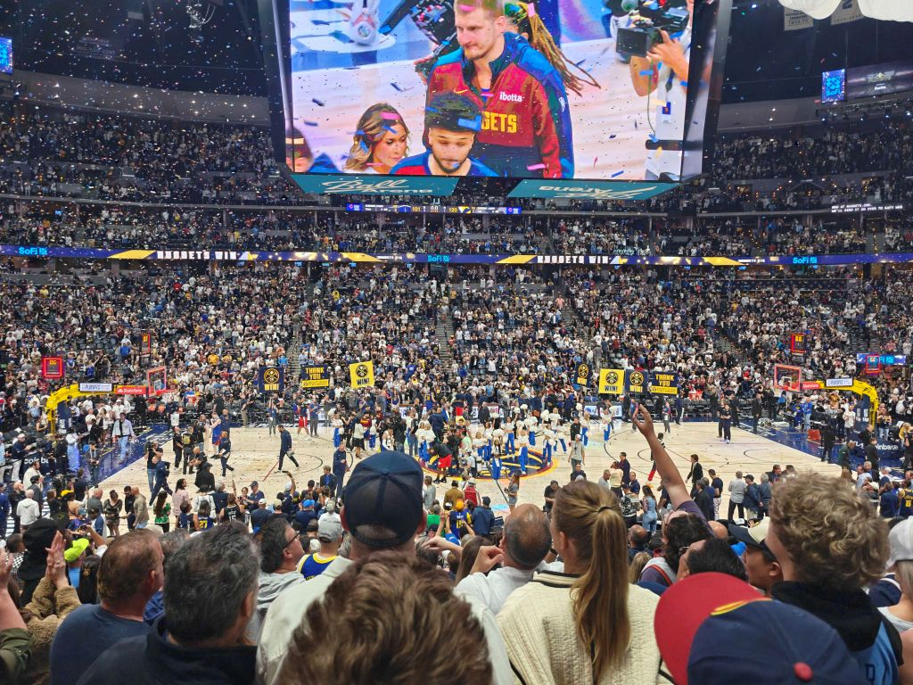
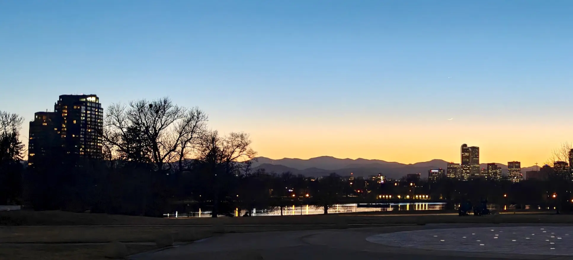
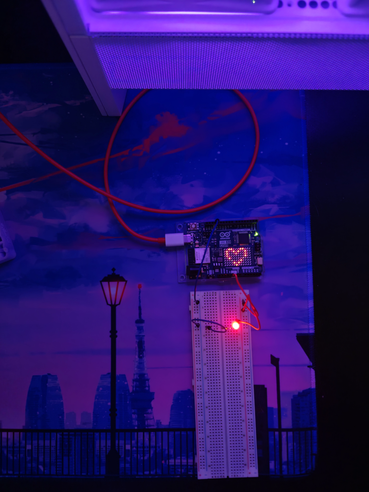
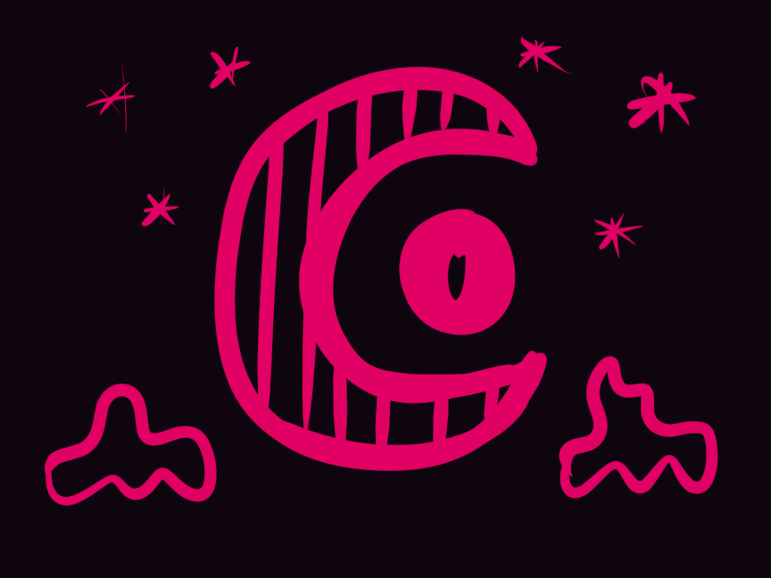
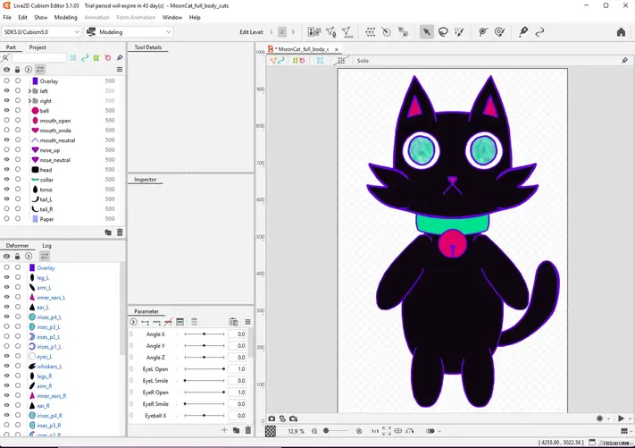
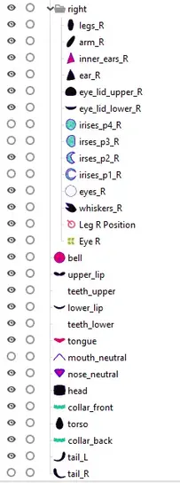
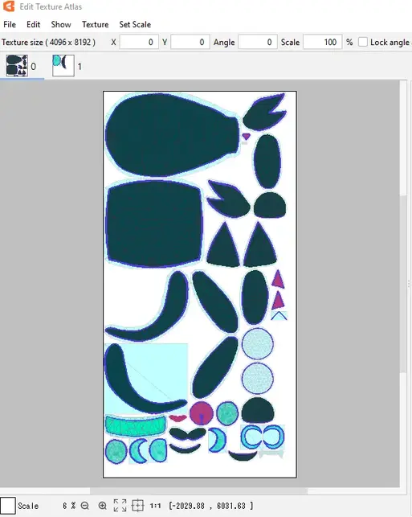
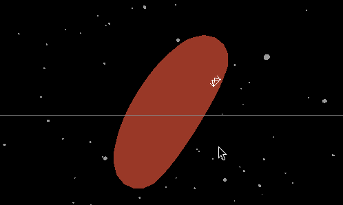
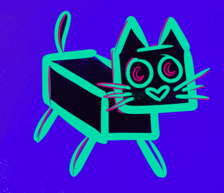

05.18.2025Whose ball? Nuggets ball.
5 pm, Head up to what's next
In Oklahoma City, the Nuggets' season ends at the buzzer of game 7 of the Western Conference semi finals with the Thunder up, 93 - 125. At home in Denver, where I am in a South Broadway pub, there are severe weather alerts and quickly passing thunderstorms roll over the city. How poetic.
How tragic.
I quickly order a Russel Westbrook jersey to commemorate the season.

The view from my seat in section 126 at Ball Arena on May 3, 2025. We celebrate after the Nuggets beat the LA Clippers 120 - 101 in game 7 round 1.
03.03.2025Resting Up On A Long Weekend
7 pm, Enjoying the Rainy Sky
My partner and I had a lovely Friday night with friends at the park. We were all excited to see what we could find in the sky, since it was the night of "The Planet Parade". Several planets could be seen with the naked eye. And with our friends' telescope, we were able to see 4 of Jupiter's moons. It was amazing!

Looking west at sunset on the evening of the Planet Parade.
I've been reading The Year of Magical Thinking by Joan Didion. Only a chapter or two, every other day. I've been thinking about my Dad a lot recently. I had a couple of days off work for a long weekend, and ended up sleeping most of the time. After those frustrating weeks, I guess I needed more rest than I realized.
While not napping, I put up shelves in my lab. Which means I have space on my desk again! I was testing some LEDs on said desk space, when I noticed how aesthetic the lighting was around me. Mostly thanks to the purple emitting from my computer.

I was testing LED's with an Arduino Uno and noticed how beautiful the colors of my environment were.
02.11.2025When They Won't Let You Cook
10 pm, Realizing I've become the miserable smart ass and I'm not even 35 yet
Work has drained so much out of me the past few weeks. In my 10 years of professional software development, the majority 7 years has been at tech startups, 6 of those years were at my first company where I cut my teeth on not only software but hardware too, and worked my way up to Director of Software. For the past 3 years, give or take, I've been working as a senior software engineer at a media company in the gaming industry. I was overqualified for the position, much more so than those hiring me realized. I happily took the opportunity because I was exceedingly interested in the game content they covered, and I also had no idea the struggles I was setting myself up for: the struggles that come with being overqualified, and my own struggles transitioning from the culture of a startup tech company to... well... any company that's not that.
First and foremost, I get bored all the time because I'm only working on software, and in a narrow context. Which that would be fine, but outside of being at a company where I'm surrounded by people (not just the engineers) that are passionate about software, I find it not nearly as stimulating. Along with the boredom, I'm often either underestimated or not approached about subjects I have past hands-on experience with that no one else in the company does. This has started to improve some recently as I've been more vocal about when I have expertise on something, whether I'm being asked about it directly or not. But in general it's very one-lane, far from the many hats I'm used to wearing. And the third thing to round out my moaning list of work laments, it's so fucking corporate that I feel like I can't breathe sometimes. The pace of executing an initiative or project is painfully slow for me.
With those struggles, and many other unsaid frustrations, I'm trying to ensure I allocate my energy in ways that are good for me. If projects won't progress quickly at work, that's fine, I won't battle it. I'll do my work then focus my energy on my own projects. There's never a shortage of things I'm cooking on... building keyboards and computers, electronics tinkering, drawing and animations, and even DIY house projects now that my partner and I have our own place. This weekend I replaced a light fixture in my staircase. +1 New skill.
01.26.2025Thought Soup
8 pm, ready for dinner
My brain is fried from the week. I'm too tired to write a lot, random thought soup instead.
I won't join blue sky, but at least they have an rss link for users so I can keep up with some people on there.
Helluva Boss is an awesome NSFW cartoon on youtube.
Love my linux machine, but my desk is getting crowded with 2 pairs of keyboard and mouse + my drawing tablet :/
All prepped to mod my steam deck with a new shell whenever I have a suitable weekend.
Maybe I'll post on youtube since I have a vtuber model ready.
WoW is still pretty boring. I'm just logging in to do weekly time walking and playing other games instead.
Halftones in CSS are fucking cool.
Purple is the best color.
When will I have top surgery this year? I don't know yet, hospitals are scary.
When I was in high school I wanted to be a lot of things, 2 that I remember well are architect and tattoo artist.

An absent-minded digital sketch from this week.
01.20.2025MoonCat Vtuber Model Reveal
1 pm, throwing confetti at MoonCat, so cute!
I plowed through progress on my vtuber model project over the weekend. I don't have much to say other than I'm so proud of how it's turned out. Here are some snippets of the process and the result of the model at this time.
Importing the art into Live2d was a big milestone in the process. I was pleased with how it looked and everything imported without a hitch. At this stage MoonCat's eye were in the full moon phase.

The initial import of the art into Live2d was great. There were a few things I improved during the processed and reimported the art, but there were no initial issues.

Organizing the layers in the art stage really paid off. See how neat all the textures look.

The texture atlas is so satisfying.
With all the art meshed and the texture atlas mapped I spent 2 days configuring the deformers, parameters, and physics. After all that, and redrawing the model's mouth, this is it! MoonCat is an animated model the works with motion capture.
This gif recording shows the model responding to my movement via camera tracking software in Vtube Studio.
The last thing I'll leave this post with is a video I found deeply inspiring from a_lilian, Microsoft broke my voice. The video essay is philosophical and immensely reflective. a_lilian shares how Microsoft changed her beloved TTS voice used for her online self, and the beautiful outcome of that loss. I'm still sitting with thoughts on my digital self, my physical self, how I want to express both, and how I've masked both. I haven't settled these feelings yet, but I was comforted by a_lilian's commentary and her community. Watching the video set a clear path for my next project. MoonCat will have a voice.
01.13.2025MoonCat, Animation, and WebGL
9pm, tired but happy watching Kuromi Halloween episodes
With my plan to make a vtuber model, I researched and practiced several tangent skills last week.
Web GL and Three.js
As you may have read, if you're visiting from Neocities or Nekoweb, I want to make my entry page look like a video game menu or start screen. Currently two links prompt the user to take the portal or turn around. This is my concept's simple basis: theme the page around a portal with these intentions:
Inform the user of important info before entering the site (e.g., they're leaving the community site to go to perpcurio.com)
Provide an interactive choice that transports the user one way or the other.
With that idea in mind, I have two approaches I'm considering:
A game menu design with a partly animated background, the menu options would be the choice to take the portal or go back
A start screen where the user moves an avatar in the direction of their choice, to the portal or back where they came from
The first option would be much easier to implement but has less interactivity for the user. The second option would be sick, but it requires me to learn about techniques for browser graphics and may not work on mobile at all. I like the second idea, and whether I can accomplish it or not, I want to try. So, I started reading and watching videos about WebGL and Three.js. I've only dedicated a couple hours to this so far, but got a little playground environment created.

A spaghetti-o in space.
Drawing MoonCat
I've drawn MoonCat several times this week and developed a few more features about my little character.
irises are the moon in different phases depending on emotion/lighting.
2 or 3 whiskers on each side of their face.
does NOT have a square body

The cubic body isn't really working is it...
MoonCat is likely to be the first model I try to rig in Live2D, once I figure out a body design. I still have ideas for a model for my persona, but I want to go really simple at first. MoonCat is perfect for that.
Animation
My only experience with animation is making very simple gif emojis in Procreate. Like the gif of MoonCat in the gify pet feature on my home page I made in procreate. From the vtuber tutorials I ended up watching a bunch of animation tutorials and trying out a few simple exercises. I... um... LOVE animation. Animated shows make up the majority of what "TV" I watch. The possibility of using a software like Live2D to make my own animated shorts is interesting to put it lightly. But anyway... Behold MoonCat yawning.
After a good year or more, I seem to be out of an art rut. It started last week when I got the urge to redraw MoonCat for a new profile picture, which I was really happy with and based the site design off of. Gotta credit Cult of the Lamb for inspiring me too. I had so much fun with that game. Then a couple of totally unexpected things happened.
The first thing, I met a nice person in Webfishing that I was chatting about art with, and after looking at some of my pieces they asked if I sold prints. Any inclination that someone else would want my art somewhere in their sight was a new experience and it definitely gave me a mood boost. I've "started" trying to be an online artist several times in the past and I've never got anywhere. Maybe this year will be the year. I lowkey started researching at-home printers for fine art prints.
The second thing, I've become really interested in vtuber models. New hyperfixations find me all the time, so that's not surprising, but the vtuber part is. I never paid much attention to them before, because I guess they all kind of looked similar to me. It's also that I'm not super into anime and I feel those communities overlap quite a bit so I hadn't been exposed to much. Now that I've browsed around, wow, I'm so impressed. I can't even remember at this point what got me started down this rabbit hole, but I've been watching a lot of videos on designing and rigging the models. I have a design in mine for my own model already and I'm excited to make progress on it. It will take a fair amount of weeks or months of working on it the evenings and weekends but I'm excited about what the model could become! I have a guestbook now. If you like any vtubers please tell me about them there!
A few random things I did this past week:
Rearranged my office and did cable management for my two PCs (linux + windows), what a pain but so worth it
Binge watched Hello Kitty and Friends Supercute Adventures. Kuromi <3
Overwatch dailies. I haven't played in a few couple battle passes
Ideas in my notebook for the site:
a page for the keyboards I've built (I like keebs a lot)
designing a custom cursor because fun pixel art
12.29.2024Hello World
2pm, gray sky and high wind
The past week has been awesome. That's because I have been off work on holiday. My partner and I celebrated Winter Solstice on the first night, feeling cozy with the near two weeks off work we had in front of us. I'm halfway into that two weeks, and have made this site. That's why we're here now, me writing and you reading. If you've wandered into this hole in the web's wall, then we must be alike, in one way or another. Maybe you were born in a year that starts with 19 and long for the days of Web 1.0, or you've become so disgusted and exhausted with social media that you're seeking the less normalized side of the web. Maybe both. Either way I'm glad we're both here. I think these actions we're taking, participating in deregulated expression, make the web a better and more interesting place.
Now, who am I? My name is Ash. I'm a 30 something enby, pronouns they/them, and being the edge lord I am, have referred to myself as Perpetually Curious since I was a teen. Online you'll often find me as PerpCurio, or Attluh in gaming. My partner is called DJ, my favorite color is purple, and I think any word sounds weird if you repeat it enough times. (I dare you to say the word "brilliant" enough times until you wonder why those are sounds we use to describe that concept.) I'm obsessed with language and also a software engineer. But I don't know that I plan to talk about that stuff much. I need somewhere to write about big feels. I have a lot of those. Which leads me back to why we're here...
The Slow Web
I hate social media. I probably don't have to explain why in detail to you. I joined way back in the days of Xanga (that's pre-MySpace) as a tween. Every platform just sucks now and I don't want to participate. I want this site right here. My site. Where I have to take time to write an entry in html, and can chew on my thoughts without a publish button waiting to yeet my words into the ether. Where I can thoughtfully design this visual expression on the web exactly as I like it. I feel like whatever we're doing here on this side of the web, is similar to what Slow Fashion makers are doing to protest fast fashion. Just like clothes are normalized, unsustainable products that get shoved down our throats, so is content we encounter on algorithmic social media sites. Artists trying to survive on social media know this all to well with the grind to post consistently. Something I was never able to make myself do. I don't always have something to say. I don't always have a painting to show. That's why I want to be here, where I can share and archive my art and thoughts without any schedules in mind. And also to unabashedly be myself and display all the wacky shit from around the internet that I love.
I hope we all have a good time here and see some cool shit.